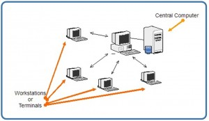
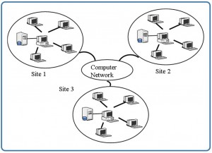

Classification of Database Systems
تصنيف أنظمة قواعد البيانات
المتن الرئيسي
Key Terms
centralized database system: the DBMS and database are stored at a single site that is used by several other systems too
distributed database system: the actual database and the DBMS software are distributed from various sites that are connected by a computer network
heterogeneous distributed database system: different sites might use different DBMS software, but there is additional common software to support data exchange between these sites
homogeneous distributed database systems: use the same DBMS software at multiple sites
multiuser database system: a database management system which supports multiple users concurrently
object-oriented data model: a database management system in which information is represented in the form of objects as used in object-oriented programming
single-user database system: a database management system which supports one user at a time
traditional models: data models that preceded the relational model
يمكن تصنيف أنظمة إدارة قواعد البيانات (DBMS) وفق عدة معايير، مثل نموذج البيانات (data model) وعدد المستخدمين وتوزّع قاعدة البيانات، وكلها موصوفة أدناه.
Exercises
Provide three examples of the most popular relational databases used.
What is the difference between centralized and distributed database systems?
What is the difference between homogenous distributed database systems and heterogeneous distributed database systems?
التصنيف (classification) بحسب نموذج البيانات
أكثر نماذج البيانات (data models) شيوعًا في الاستخدام اليوم هو نموذج البيانات العلائقي (relational data model). تدعم أنظمة إدارة قواعد البيانات (DBMS) المعروفة مثل Oracle وMS SQL Server وDB2 وMySQL هذا النموذج. ولا تزال النماذج التقليدية الأخرى، مثل نماذج البيانات الهرمية (hierarchical data models) ونماذج البيانات الشبكية (network data models)، مستخدمة في الصناعة خصوصًا على منصات الحاسوب المركزي (mainframe platforms). غير أنها لا تُستخدم على نطاق واسع بسبب تعقيدها. ويشار إلى جميع هذه النماذج بالنماذج التقليدية (traditional models) لأنها سبقت النموذج العلائقي.
في السنوات الأخيرة، طُرِّقت نماذج البيانات الأحدث الموجّهة للكائنات (object-oriented data models). وهذا النموذج هو نظام إدارة قواعد بيانات تُمثَّل فيه المعلومات على هيئة كائنات (objects) كما هي مستخدمة في البرمجة الموجّهة للكائنات. وتختلف قواعد البيانات الموجّهة للكائنات عن قواعد البيانات العلائقية المعتمدة على الجداول. وتجمع أنظمة إدارة قواعد البيانات الموجّهة للكائنات (OODBMS) بين قدرات قواعد البيانات وقدرات لغة البرمجة الموجّهة للكائنات.
لم تنل نماذج البيانات الموجّهة للكائنات القبول المتوقع، لذا فهي ليست مستخدمة على نطاق واسع. ومن أمثلة أنظمة إدارة قواعد البيانات الموجّهة للكائنات: O2 وObjectStore وJasmine.
التصنيف بحسب عدد المستخدمين
يمكن تصنيف نظام إدارة قواعد البيانات (DBMS) بحسب عدد المستخدمين الذين يدعمهم. فقد يكون نظام قواعد بيانات لمستخدم واحد (single-user database system) يدعم مستخدمًا واحدًا في كل مرة، أو نظام قواعد بيانات متعدد المستخدمين (multiuser database system) يدعم عدة مستخدمين في الوقت نفسه.
التصنيف بحسب توزّع قاعدة البيانات
توجد أربعة أنظمة توزيع رئيسية لأنظمة قواعد البيانات، وهذه بدورها يمكن أن تُستخدم في تصنيف أنظمة إدارة قواعد البيانات.
الأنظمة المركزية (Centralized systems)
في نظام قواعد البيانات المركزي (centralized database system)، يُخزَّن نظام إدارة قواعد البيانات وقاعدة البيانات في موقع واحد تستخدمه عدة أنظمة أخرى أيضًا. ويوضح ذلك في الشكل 6.1.

في مطلع الثمانينيات من القرن الماضي، استخدمت كثير من المكتبات الكندية جهاز GEAC 8000 لتحويل فهارس البطاقات الورقية الخاصة بها إلى أنظمة فهرسة مركزية قابلة للقراءة الآلية. وكان لكل فهرس كتب حقل باركود مشابه لتلك الموجودة في منتجات محطات التسوق.
نظام قواعد البيانات الموزّع (Distributed database system)
في نظام قواعد البيانات الموزّع (distributed database system)، تُوزَّع قاعدة البيانات الفعلية وبرمجيات نظام إدارة قواعد البيانات من مواقع مختلفة ترتبط بشبكة حاسوبية، كما هو موضح في الشكل 6.2.

أنظمة قواعد البيانات الموزّعة المتجانسة (Homogeneous distributed database systems)
تستخدم أنظمة قواعد البيانات الموزّعة المتجانسة (homogeneous distributed database systems) البرمجية نفسها لإدارة قواعد البيانات من مواقع متعددة. ويمكن التعامل مع تبادل البيانات بين هذه المواقع المختلفة بسهولة. فمثلًا، تستخدم أنظمة معلومات المكتبات الصادرة عن المورّد نفسه، مثل Geac Computer Corporation، البرمجية نفسها لإدارة قواعد البيانات، ما يسمح بتبادل البيانات بسهولة بين مواقع مكتبات Geac المختلفة.
أنظمة قواعد البيانات الموزّعة غير المتجانسة (Heterogeneous distributed database systems)
في نظام قواعد البيانات الموزّع غير المتجانس (heterogeneous distributed database system)، قد تستخدم المواقع المختلفة برمجيات مختلفة لإدارة قواعد البيانات، غير أنه توجد برمجيات مشتركة إضافية تدعم تبادل البيانات بين هذه المواقع. فمثلًا، تستخدم أنظمة قواعد بيانات المكتبات المختلفة صيغة الفهرسة المقروءة آليًا (MARC) نفسها لدعم تبادل بيانات سجلات المكتبات.
نظام قواعد البيانات المركزي (centralized database system): نظام إدارة قواعد البيانات وقاعدة البيانات مخزَّنان في موقع واحد تستخدمه عدة أنظمة أخرى أيضًا
نظام قواعد البيانات الموزّع (distributed database system): قاعدة البيانات الفعلية وبرمجيات نظام إدارة قواعد البيانات موزَّعة من مواقع مختلفة ترتبط بشبكة حاسوبية
نظام قواعد البيانات الموزّع غير المتجانس (heterogeneous distributed database system): قد تستخدم المواقع المختلفة برمجيات مختلفة لإدارة قواعد البيانات، غير أنه توجد برمجيات مشتركة إضافية تدعم تبادل البيانات بين هذه المواقع
أنظمة قواعد البيانات الموزّعة المتجانسة (homogeneous distributed database systems): تستخدم البرمجية نفسها لإدارة قواعد البيانات في مواقع متعددة
نظام قواعد البيانات متعدد المستخدمين (multiuser database system): نظام إدارة قواعد بيانات يدعم عدة مستخدمين في الوقت نفسه
نموذج البيانات الموجّه للكائنات (object-oriented data model): نظام إدارة قواعد بيانات تُمثَّل فيه المعلومات على هيئة كائنات كما هي مستخدمة في البرمجة الموجّهة للكائنات
نظام قواعد البيانات لمستخدم واحد (single-user database system): نظام إدارة قواعد بيانات يدعم مستخدمًا واحدًا في كل مرة
النماذج التقليدية (traditional models): نماذج بيانات سبقت النموذج العلائقي
- اذكر ثلاثة أمثلة لأشهر قواعد البيانات العلائقية المستخدمة.
- ما الفرق بين أنظمة قواعد البيانات المركزية وأنظمة قواعد البيانات الموزّعة؟
- ما الفرق بين أنظمة قواعد البيانات الموزّعة المتجانسة وأنظمة قواعد البيانات الموزّعة غير المتجانسة؟
الإسناد (Attribution)
هذا الفصل من كتاب تصميم قواعد البيانات (Database Design)، بما في ذلك الصور باستثناء ما أُشير إليه خلاف ذلك، هو نسخة مشتقة من Database System Concepts بقلم Nguyen Kim Anh، وهو مرخَّص بموجب رخصة المشاع الإبداعي: نسب العمل 3.0
كتبت المادة التالية Adrienne Watt:
- المصطلحات المفتاحية
- التمارين